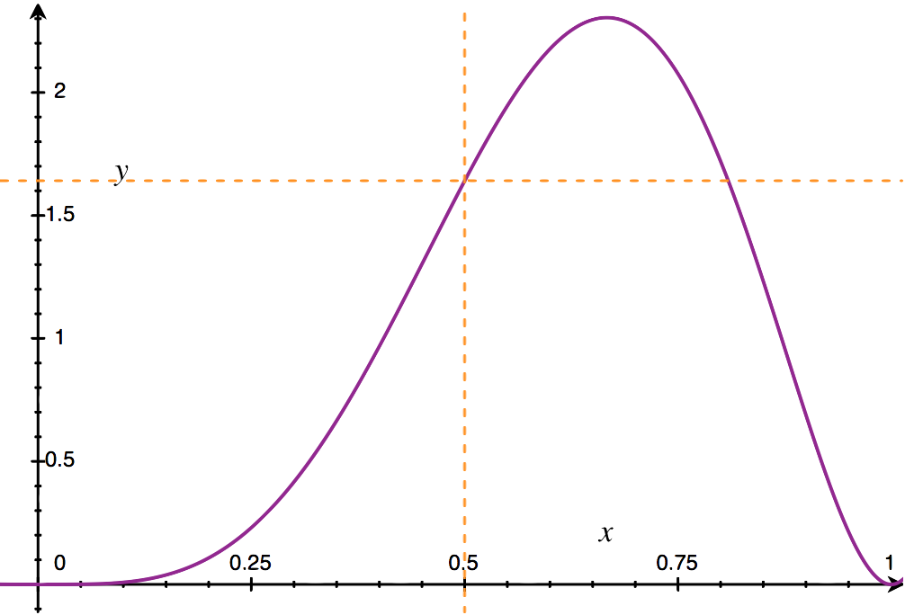
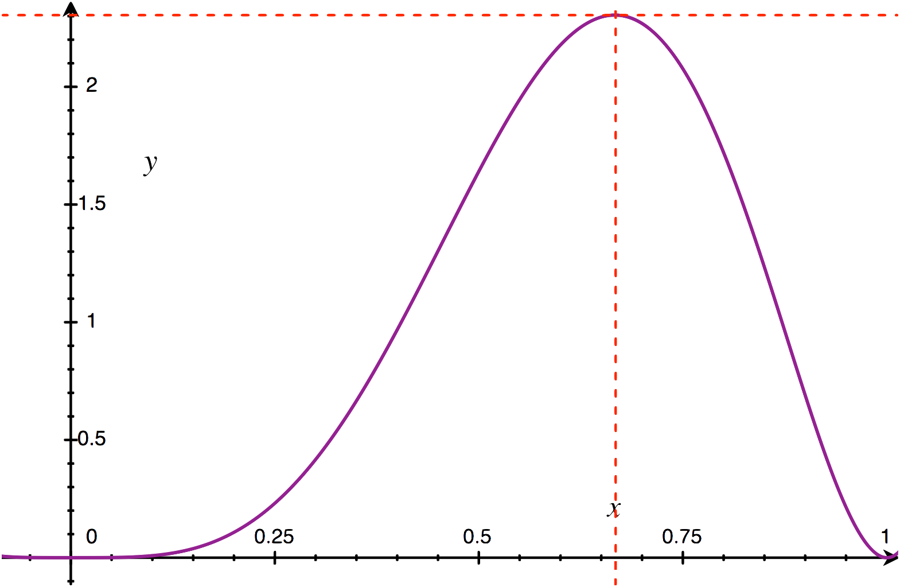
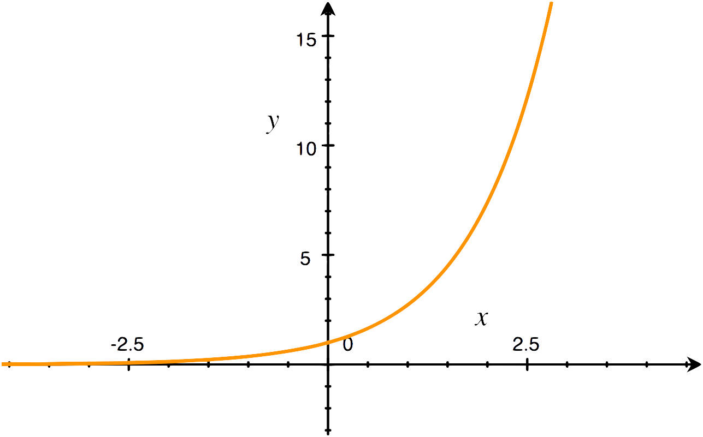
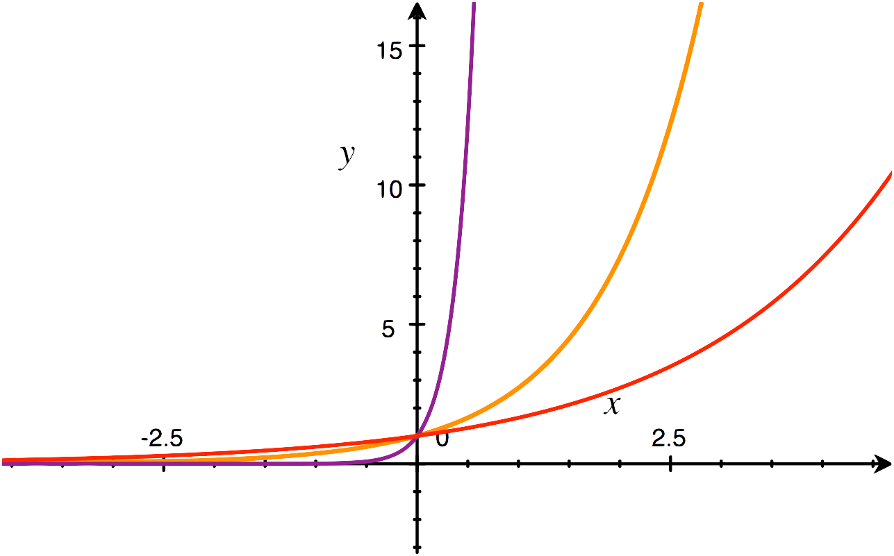

Generalized Linear Models
Notice: There so many mathematics concept need to be covered in this chapter, I tried to put them all in just one post, that's why it's so damn long, but please read it carefully one by one and just don't skip. Good luck!
To understand Generalized Linear Models, we need to talk about the probabilistic intepretation of a model at first.
Probabilistic Interpretation
Let's take a look at how we can represent our last two problems in probabilistic form.
Linear Regression Models
In linear regression, we have the target and input values related via this equation:
$y^{(i)} = \theta_{0} + \theta_{1}x^{(i)}_{1} + ... + \theta_{n}x^{(i)}_{n}$
Or we can write in matrix notation as:
$y^{(i)} = \theta^{T}x^{(i)}$
To be percise, sometimes we have some unmodelled effects (something useful but we left out of the regression) and we should capture them, so we can add some error term to the equation above to do that:
$y^{(i)} = \theta^{T}x^{(i)} + \epsilon^{(i)}$
From now on, let's assume that the $\epsilon^{(i)}$ are distributed IID (independently and identically distributed) according to Normal Distribution with zero mean ($\mu = 0$) and some variance $\sigma^{2}$
$\epsilon^{(i)} \sim \mathcal{N}(0, \sigma^{2})$
So we have the probability destiny (distribution) of $\epsilon^{(i)}$ is:
$\rho(\epsilon^{(i)}) = \frac{1}{\sqrt{2\pi\sigma}}exp(-\frac{(\epsilon^{(i)})^{2}}{2\sigma^{2}})$

But hold on! We don't really care about this, so don't pay too much attention to this equation.
What we need to know is the distribution of $y^{(i)}$ given by $x^{(i)}$ and parameter $\theta$ with the co-effect from $\epsilon^{(i)}$:
$\rho(y^{(i)}|x^{(i)};\theta) = \frac{1}{\sqrt{2\pi\sigma}}exp(-\frac{(y^{(i)} - \theta^{T}x^{(i)})^{2}}{2\sigma^{2}})$
Or shorten it a bit with:
$y^{(i)}|x^{(i)};\theta \sim \mathcal{N}(\theta^{T}x^{(i)}, \sigma^{2})$
The Likelihood
When it comes to likelihood, many people get confused with the probability. Let's compare the two terms:
- Probability: is the unknown outcome
$\rho$to be predicted based on known parameter$\theta$, notated by:$\rho(x|\theta)$ - Likelihood: is the unknown parameter
$\theta$to be estimated based on known outcome$\rho$, notated by:$L(\theta|x)$itself, and with the known outcome, we have:$L(\theta|x) = \rho(x|\theta)$
Let's take a closer look with the two terms with the coin flipping example. When we flip a coin, it will gives us a head or a tail face. So, we have $\theta$ is probability of getting heads (parameter), and it will be 0.5 (50% head, 50% tail). And $\vec{x}$ is the outcome, tell us the flip results $\vec{x} = [H, H, H, T, T, H]$
So, the probability of outcome given parameter is:
$\rho(\vec{x}=[H, H, H, T, T, H] | \theta=0.5) = 0.5^{6} = 0.016$
The likelihood of parameter $\theta=0.5$ with given outcome is:
$L(\theta=0.5|\vec{x}=[H, H, H, T, T, H]) = \rho(\vec{x}|\theta) = 0.016$

Note: The likelihood is defined differently for discrete and continuos probability distribution, please check it on Wikipedia for a detailed definition.
Back to the Linear Regression, given X (the design matrix which contains all the $x^{(i)}$ values), and $\theta$, the probability of the data is given by $\rho(\vec{y}|X;\theta)$.
This probability is a function of $\vec{y}$ with a fixed value $\theta$. For optimization, we need this to be a function of $\theta$ instead, this function can be called likelihood function:
$L(\theta) = L(\theta;X;\vec{y}) = \rho(\vec{y}|X;\theta)$
Expanding this, we have:
$L(\theta) = \displaystyle\prod_{i=1}^{m}\frac{1}{\sqrt{2\pi\sigma}}exp(-\frac{(y^{(i)}-\theta^{T}x^{(i)})^{2}}{2\sigma^{2}})$
Maximum Likelihood
In the coin flipping example above, we noticed that the likelihood reaching its maximum when $\theta=0.6676$

When this happen, we could say: $\theta = 0.6676$ maximize $L(\theta)$, and it also make the data model has the highest probability.
The process to find the best $\theta$ that maximize the likelihood is called maximum likelihood estimation
We can use any optimization algorithm to maximize likelihood, for example, we can use Gradient Descent Algorithm.
To maximize the likelihood, we can maximizing $L(\theta)$ or maximizing any function of $L(\theta)$, and if we gonna use Gradient Descent, it's better to do the optimization with log likelihood ($\ell(\theta)$) because it will be easier to find its derivative.
$\ell(\theta) = m\log\frac{1}{\sqrt{2\pi\sigma}}-\frac{1}{\sigma^{2}}\frac{1}{2}\displaystyle\sum_{i=1}^{m}(y^{(i)}-\theta^{T}x^{(i)})^{2}$
Logistic Regression Models
For Logistic Regression, our hypothesis function is:
$h_{\theta}(x) = g(\theta^{T}x)=\frac{1}{1 + e^{-\theta^{T}x}}$
Its derivative should be:
$g'(z) = \frac{d}{dz}\frac{1}{1 + e^{-z}} = g(z)(1 - g(z))$
So, as above, let's talk about the probabilistic represent of Linear Regression Models.
Bernoulli Distribution
We noticed that the probability distribution of a Logistic Regression Models could be defined by Bernoulli Distribution
$\rho(y|x;\theta)=
\begin{cases}
h_{\theta}(x) & \text{if y = 1} \\
1 - h_{\theta}(x) & \text{if y = 0}
\end{cases}
$
Or write compactly as:
$\rho(y|x;\theta) = (h_{\theta}(x))^{y}(1-h_{\theta}(x))^{1-y}$
Likelihood and Log Likelihood
Assuming that we have m training examples generated independently, the likelihood of parameters will be:
$L(\theta) = \rho(\vec{y}|X;\theta) = \displaystyle\prod_{i=1}^{m} (h_{\theta}(x^{(i)}))^{y^{(i)}}(1-h_{\theta}(x^{(i)}))^{1-y^{(i)}}$
And here is the log likelihood
$\ell(\theta) = \log{L(\theta)} = \displaystyle\sum_{i=1}^{m}y^{(i)}\log{h(x^{(i)})}+(1-y^{(i)})\log{(1-h(x^{(i)}))}$
Then you can use Gradient Descent to estimate $\theta$ just same as Linear Regression problem above.
Generalized Linear Models
So, in the two problems described above, we have $y|x;\theta \sim \mathcal{N}(\mu,\sigma^{2})$ as a probabilistic representation of a regression model, and another one is $y|x;\theta \sim \text{Bernoulli}(\phi)$ (which $\phi$ is a function of $x$ and $\theta$) as a probabilistic representation of a classification model.
Those two are the special cases of a broader family of models, which called Generalized Linear Models (GLMs)
The exponential family
Exponential Function is a function of the form:
$f(x)=b^{x}$

Its distribution can be written in the form:
$\rho(y;\eta) = b(y)exp(\eta^{T}T(y) - a(\eta))$
$\eta$ is called the natural parameter (a.k.a canonical parameter) of the distribution.
$T(y)$ is the sufficient statistic (in this distribution, it can be $T(y) = y$)
$a(\eta)$ is the log partition function
A fixed choice of T, a and b defines a family (or set) of distributions that parameterized by $\eta$. As we vary $\eta$, we get the different distribution within the faimily.

Special case of exponential: Bernoulli Distribution
The Bernoulli distribution with mean $\phi$ written by $\text{Bernoulli}(\phi)$. We have:
$\rho(y;\phi) = \phi^{y}(1-\phi)^{1-y} = exp((\log{(\frac{\phi}{1-\phi})})y + \log{(1 - \phi)})$
The choice of T, a and b here is:
$\begin{eqnarray*}
\eta & = & \log{(\phi / (1 - \phi))} \\
\phi & = & 1/(1 + e^{-\eta}) \\
T(y) & = & y \\
a(\eta) & = & -\log{(1 - \phi)} = \log{(1 + e^{\eta})} \\
b(y) & = & 1
\end{eqnarray*}$
We may noticed that the $\phi$ is obtained by invert the definition of $\eta$ and solving it, it will be a similar function with sigmoid function.
Another case of exponential: Normal Distribution
Remember that when deriving linear regression, the value of $\sigma^{2}$ has no effect on the final choice of $\theta$ and $h_{\theta}(x)$. So, let's set $\sigma^{2} = 1$. We then have:
$
\begin{eqnarray*}
\rho(y;\mu) & = & \frac{1}{\sqrt{2\pi}}\exp{(-\frac{1}{2}(y - \mu)^2)} \\
& = & \frac{1}{\sqrt{2\pi}}\exp{(-\frac{1}{2}y^{2})}\exp{(\mu y-\frac{1}{2}\mu^{2})}
\end{eqnarray*}
$
So, the choice of T, a and b here is:
$\begin{eqnarray*}
\eta & = & \mu \\
T(y) & = & y \\
a(\eta) & = & \mu^{2} / 2 = \eta^{2} / 2 \\
b(y) & = & (1 / \sqrt{2\pi})\exp{(-y^{2}/2)}
\end{eqnarray*}$
Next, let's talk about the general approach to constructing GLM.